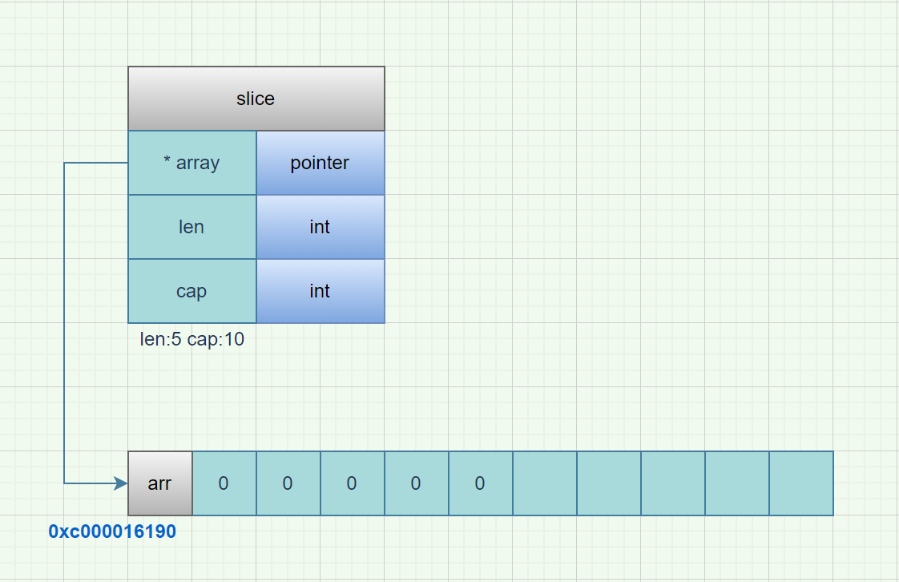
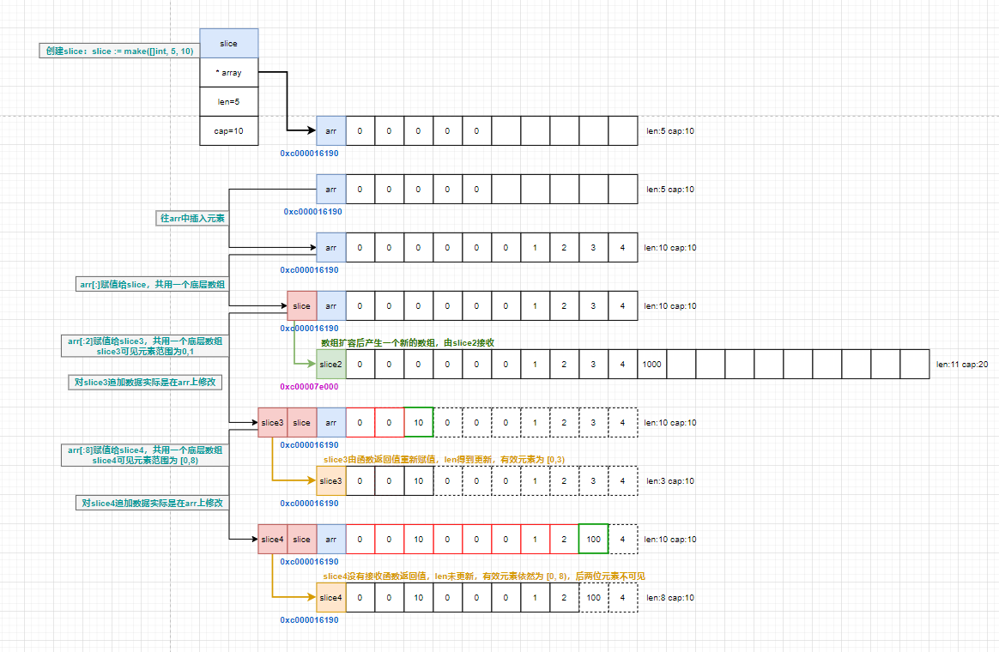

slice底层原理
slice是什么？
切片(slice)是 Golang 中一种比较特殊的数据结构，这种数据结构更便于使用和管理数据集合。切片是围绕动态数组的概念构建的，可以按需自动增长和缩小。切片(slice)是可以看做是一个长度可变的数组。
切片(slice)自身并不是动态数组或者数组指针。它内部实现的数据结构通过指针引用底层数组，设定相关属性将数据读写操作限定在指定的区域内。
切片(slice)是对数组一个连续片段的引用，所以切片是一个引用类型。
slice的实现原理
切片本身并不是动态数组或者数组指针。它内部实现的数据结构通过指针引用底层数组，设定相关属性将数据读写操作限定在指定的区域内。切片本身是一个只读对象，其工作机制类似数组指针的一种封装。
切片（slice）是对数组一个连续片段的引用，所以切片是一个引用类型（因此更类似于 C/C++ 中的数组类型，或者 Python 中的 list 类型）。这个片段可以是整个数组，或者是由起始和终止索引标识的一些项的子集。需要注意的是，终止索引标识的项不包括在切片内。切片提供了一个与指向数组的动态窗口。
slice数据结构
type slice struct {
array unsafe.Pointer
len int
cap int
}
slice内存模型

切片的结构体由3部分构成，Pointer 是指向一个数组的指针，len 代表当前切片的长度，cap 是当前切片的容量。cap 总是大于等于 len 的。
创建slice
make 函数允许在运行期动态指定数组长度，绕开了数组类型必须使用编译期常量的限制。
silce := make( []int , 10) //创建一个len为10，cap大于len的切片
silce := make( []int , 0, 10) //创建一个len为0，cap为10的切片
silce := make( []int , 0) //创建一个空切片
var slice []int //创建一个nil切片
nil 切片被用在很多标准库和内置函数中，描述一个不存在的切片的时候，就需要用到 nil 切片。比如函数在发生异常的时候，返回的切片就是 nil 切片。nil 切片的指针指向 nil。
空切片一般会用来表示一个空的集合。比如数据库查询，一条结果也没有查到，那么就可以返回一个空切片
从 slice 中得到一块内存地址
s := make([]byte, 200)
ptr := unsafe.Pointer(&s[0])
从 Go 的内存地址中构造一个 slice
var ptr unsafe.Pointer
var s1 = struct {
addr uintptr
len int
cap int
}{ptr, length, length}
s := *(*[]byte)(unsafe.Pointer(&s1))
构造一个虚拟的结构体，把 slice 的数据结构拼出来。
当然还有更加直接的方法，在 Go 的反射中就存在一个与之对应的数据结构 SliceHeader，我们可以用它来构造一个 slice:
var o []byte
sliceHeader := (*reflect.SliceHeader)((unsafe.Pointer(&o)))
sliceHeader.Cap = length
sliceHeader.Len = length
sliceHeader.Data = uintptr(ptr)
slice扩容原理
扩容原则
- 如果切片的容量小于1024个元素，那么扩容的时候slice的cap就乘以2；一旦元素个数超过1024个元素，增长因子就变成1.25，即每次增加原来容量的四分之一。
- 如果扩容之后，还没有触及原数组的容量，那么，切片中的指针指向的位置，就还是原数组，如果扩容之后，超过了原数组的容量，那么，Go就会开辟一块新的内存，把原来的值拷贝过来，这种情况丝毫不会影响到原数组。
策略源码
源码位于go/src/runtime/slice.go中
func growslice(et *_type, old slice, cap int) slice {
if raceenabled {
callerpc := getcallerpc(unsafe.Pointer(&et))
racereadrangepc(old.array, uintptr(old.len*int(et.size)), callerpc, funcPC(growslice))
}
if msanenabled {
msanread(old.array, uintptr(old.len*int(et.size)))
}
if et.size == 0 {
// 如果新要扩容的容量比原来的容量还要小，这代表要缩容了，那么可以直接报panic了。
if cap < old.cap {
panic(errorString("growslice: cap out of range"))
}
// 如果当前切片的大小为0，还调用了扩容方法，那么就新生成一个新的容量的切片返回。
return slice{unsafe.Pointer(&zerobase), old.len, cap}
}
// 这里就是扩容的策略
newcap := old.cap
doublecap := newcap + newcap
if cap > doublecap {
newcap = cap
} else {
if old.len < 1024 {
newcap = doublecap
} else {
for newcap < cap {
newcap += newcap / 4
}
}
}
// 计算新的切片的容量，长度。
var lenmem, newlenmem, capmem uintptr
const ptrSize = unsafe.Sizeof((*byte)(nil))
switch et.size {
case 1:
lenmem = uintptr(old.len)
newlenmem = uintptr(cap)
capmem = roundupsize(uintptr(newcap))
newcap = int(capmem)
case ptrSize:
lenmem = uintptr(old.len) * ptrSize
newlenmem = uintptr(cap) * ptrSize
capmem = roundupsize(uintptr(newcap) * ptrSize)
newcap = int(capmem / ptrSize)
default:
lenmem = uintptr(old.len) * et.size
newlenmem = uintptr(cap) * et.size
capmem = roundupsize(uintptr(newcap) * et.size)
newcap = int(capmem / et.size)
}
// 判断非法的值，保证容量是在增加，并且容量不超过最大容量
if cap < old.cap || uintptr(newcap) > maxSliceCap(et.size) {
panic(errorString("growslice: cap out of range"))
}
var p unsafe.Pointer
if et.kind&kindNoPointers != 0 {
// 在老的切片后面继续扩充容量
p = mallocgc(capmem, nil, false)
// 将 lenmem 这个多个 bytes 从 old.array地址 拷贝到 p 的地址处
memmove(p, old.array, lenmem)
// 先将 P 地址加上新的容量得到新切片容量的地址，然后将新切片容量地址后面的 capmem-newlenmem 个 bytes 这块内存初始化。为之后继续 append() 操作腾出空间。
memclrNoHeapPointers(add(p, newlenmem), capmem-newlenmem)
} else {
// 重新申请新的数组给新切片
// 重新申请 capmen 这个大的内存地址，并且初始化为0值
p = mallocgc(capmem, et, true)
if !writeBarrier.enabled {
// 如果还不能打开写锁，那么只能把 lenmem 大小的 bytes 字节从 old.array 拷贝到 p 的地址处
memmove(p, old.array, lenmem)
} else {
// 循环拷贝老的切片的值
for i := uintptr(0); i < lenmem; i += et.size {
typedmemmove(et, add(p, i), add(old.array, i))
}
}
}
// 返回最终新切片，容量更新为最新扩容之后的容量
return slice{p, old.len, newcap}
}
注意事项:
扩容扩大的容量都是针对原来的容量而言的，而不是针对原来数组的长度而言的。
扩容可能是在原来的地址后追加，也可能会生成全新的内存地址。
// 操作这种形式生成的切片非常危险，极易产生bug。
sliceB := sliceA[0:5]
代码示例
示例1:
猜猜下面的代码会输出什么：
package main
import . "fmt"
func main() {
arr := make([]int, 5, 10)
for i:=0; i < 5; i++ {
arr = append(arr, i)
}
slice := arr[:]
slice2 := append(slice, 1000)
slice3 := arr[:2]
slice3 = append(slice3, 10)
slice4 := arr[0:8]
_ = append(slice4, 100)
Printf("arr:%v, len:%d, cap:%d, addr:%p\n", arr, len(arr), cap(arr), arr)
Printf("slice:%v, len:%d, cap:%d, addr:%p\n", slice, len(slice), cap(slice), slice)
Printf("slice2:%v, len:%d, cap:%d, addr:%p\n", slice2, len(slice2), cap(slice2), slice2)
Printf("slice3:%v, len:%d, cap:%d, addr:%p\n", slice3, len(slice3), cap(slice3), slice3)
Printf("slice4:%v, len:%d, cap:%d, addr:%p\n", slice4, len(slice4), cap(slice4), slice4)
}
输出内容：
arr:[0 0 10 0 0 0 1 2 100 4], len:10, cap:10, addr:0xc0000b2050
slice:[0 0 10 0 0 0 1 2 100 4], len:10, cap:10, addr:0xc0000b2050
slice2:[0 0 0 0 0 0 1 2 3 4 1000], len:11, cap:20, addr:0xc0000de000
slice3:[0 0 10], len:3, cap:10, addr:0xc0000b2050
slice4:[0 0 10 0 0 0 1 2], len:8, cap:10, addr:0xc0000b2050
Process finished with exit code 0
内存分析: 
示例2:
猜猜下面的代码会输出什么：
package main
import . "fmt"
func main() {
type Student struct {
Name string
Age int
Score int
}
slice1 := []Student{
{"张三", 18, 0},
{"李四", 20, 0},
{"王五", 22, 0}}
m := make(map[string]*Student, 0)
for _, v := range slice1 {
v.Score = 100
m[v.Name] = &v
}
Println(slice1)
for k, v := range m {
Println(k, v)
}
}
变量v为中间变量，可重复利用，对v取地址实际取的是同一个地址。
同样，更改变量v也不会影响到原切片的内容。
输出内容：
[{张三 18 0} {李四 20 0} {王五 22 0}]
张三 &{王五 22 100}
李四 &{王五 22 100}
王五 &{王五 22 100}
Process finished with exit code 0